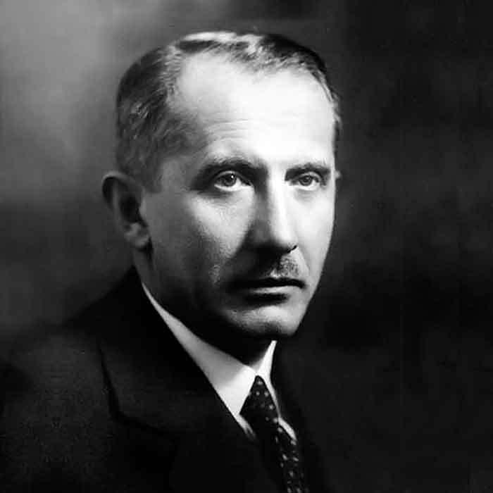

ІСТОРІЯ В ОБЛИЧЧЯХ
Фотоархів
Роздивіться обличчя, знайдіть деталі, поверніться до подій. Від портрета молодого Коновальця до будинку в Зашкові — фотографії дають історії людський масштаб.
У добірці — 5 фотографій: три портрети, військовий стрій і місце пам’яті.
ВІЗУАЛЬНА ІСТОРІЯ
Постаті, події, місця

Євген Коновалець
Коновалець у темному костюмі, білій сорочці та візерунчастій краватці. Яким постає військовий і політичний діяч у цивільному вбранні?
На що звернути увагу
Порівняйте світлі ділянки обличчя й сорочки з темним тлом. Чіткий комір, краватка та стримана поза допомагають помітити, як побудовано цей офіційний портрет.


Січові стрільці. Київ, 1918
Січові стрільці вишикувалися на міській вулиці: у кадрі видно довгі шинелі, головні убори й фасад будівлі. Які деталі повторюються вздовж усього строю?
На що звернути увагу
Простежте, як стрій віддаляється вглиб кадру. Одяг, бруківка та будинок дають матеріал для спостереження; імена окремих людей за цією світлиною тут не встановлюємо.
.jpg){kind=link}

На початку шляху
Молодий Коновалець дивиться просто в об’єктив; на ньому однострій із високим коміром. Що змінюється, коли порівняти цей кадр із портретами в костюмі?
На що звернути увагу
Роздивіться високий комір, застібку та рівну поставу. Вони видимі на фотографії, але самі собою не дають змоги встановити точну дату знімання чи обставини.

Погляд крізь час
На цьому портреті обличчя повернуте праворуч, а частина кадру губиться в тіні. Як ракурс і світло змінюють ваше враження від тієї самої людини?
На що звернути увагу
Зіставте напрямок погляду з першим портретом. Світло підкреслює лоб, щоку та край коміра, а темне тло зосереджує увагу на обличчі й виразі очей.

Будинок у Зашкові
Білий будинок із дерев’яним ґанком стоїть поміж деревами з осіннім листям. Зашків повертає нас до початку біографії Коновальця: які сліди місця пам’яті ви помічаєте в кадрі?
На що звернути увагу
Відшукайте стежку до ґанку, таблички на фасаді й пам’ятний знак біля дерева. Вони показують, як звичайний житловий простір стає місцем розмови про минуле.
ДИВИТИСЯ УВАЖНІШЕ
Одна фотографія — кілька запитань
Фотографія зберігає деталі, але не розповідає всього. Перш ніж робити висновок, спробуйте відділити те, що бачите, від того, що ще треба перевірити.
Де це знято?
Роздивіться будівлі, вулицю й оточення. Звірте припущення з підписом та описом у джерелі.
Коли це було?
Шукайте датування в архівному описі. Вік людини чи одяг — підказки, але не підтверджена дата.
Хто створив знімок?
Перевірте ім’я фотографа, походження копії та умови використання. Якщо даних немає, це теж варто зазначити.
Під двома світлинами є посилання на Wikimedia Commons. Для трьох зображень із початкового проєкту повних відомостей бракує — ці прогалини позначено в підписах.
ОБЕРІТЬ ПРОДОВЖЕННЯ
Оберіть, куди рушити далі
Поверніться до історії будинку або поділіться запитанням, яке виникло під час перегляду.
Натисніть ліву частину світлини, щоб прочитати про дитинство Коновальця; праву — щоб перейти до форми зворотного зв’язку. Ті самі маршрути є в посиланнях нижче.
Дитинство та юність Зворотний зв’язокПРОДОВЖІТЬ ЗНАЙОМСТВО